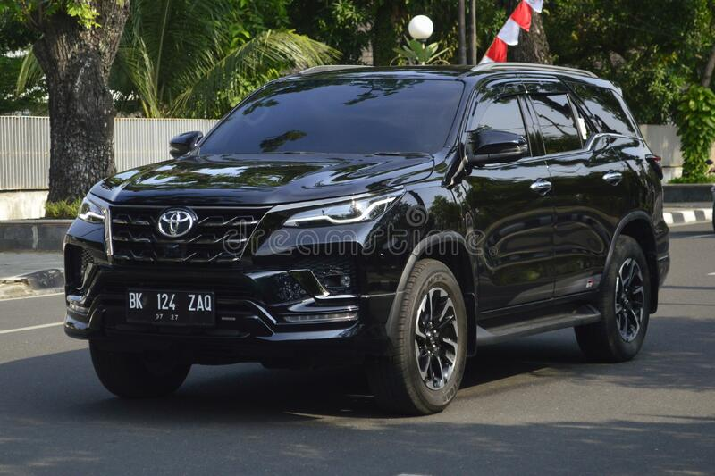

Fortuner Specs, Features and Price
The Diesel engine is 2755 cc while the Petrol engine is 2694 cc. It is available with Automatic & Manual transmission. Depending upon the variant and fuel type the Fortuner has a mileage of 10.0 kmpl. The Fortuner is a 7 seater 4 cylinder car and has length of 4795mm, width of 1855mm and a wheelbase of 2745mm.